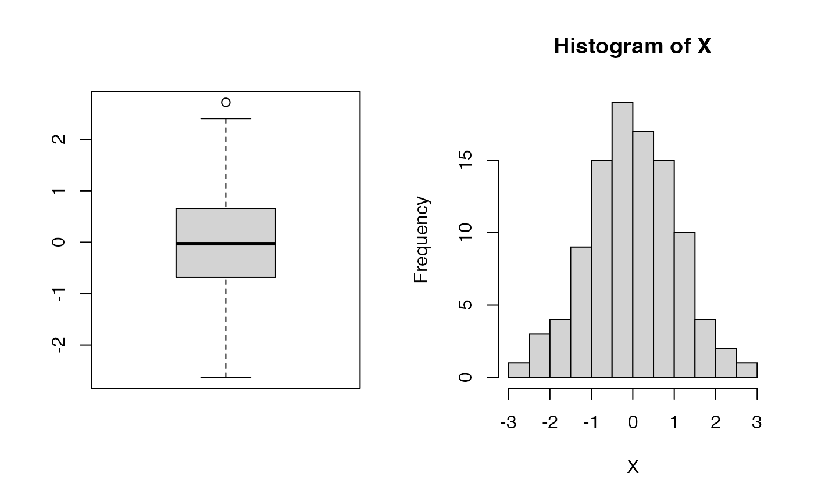
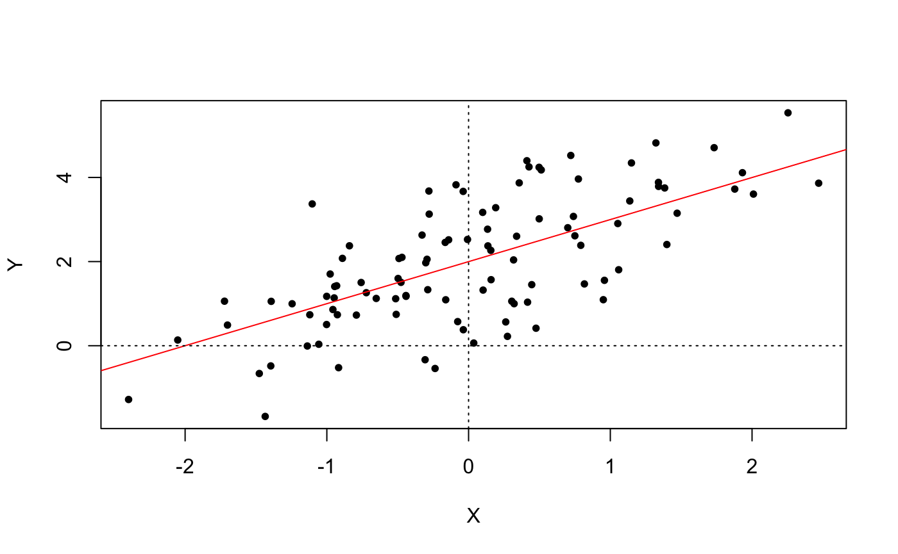
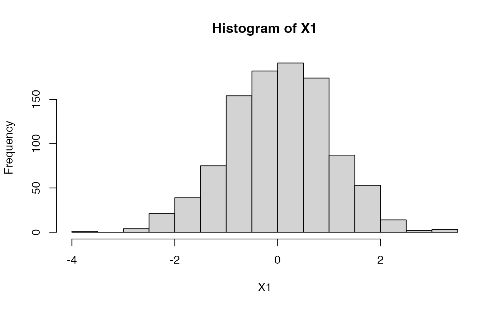
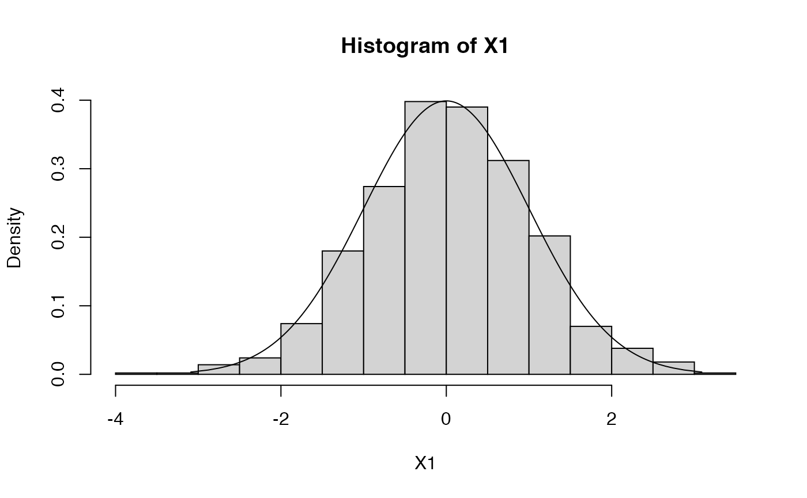
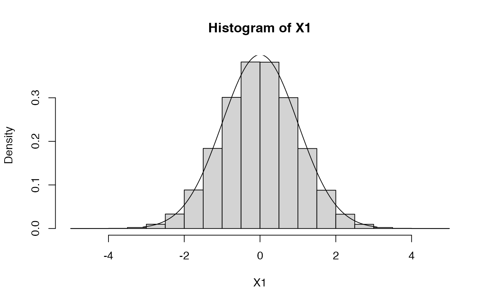
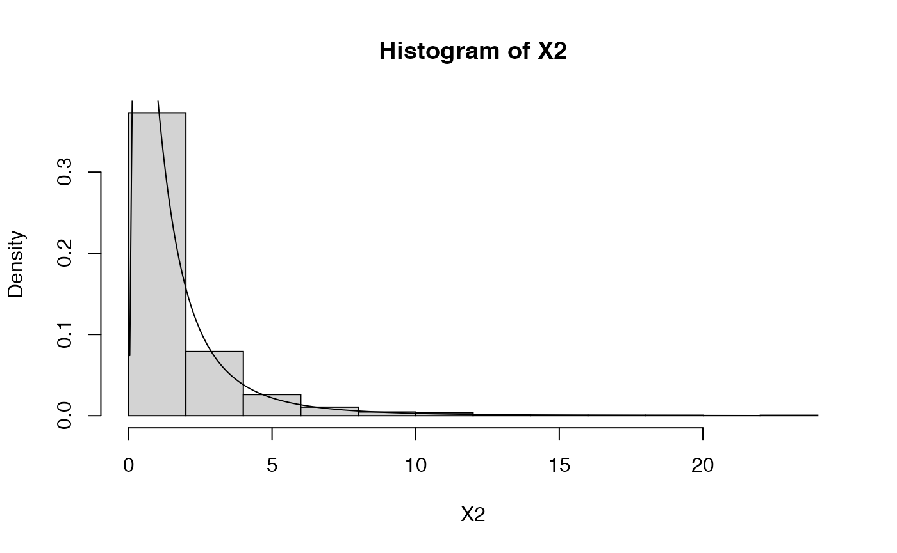
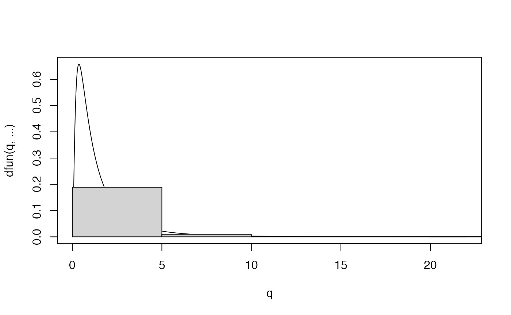
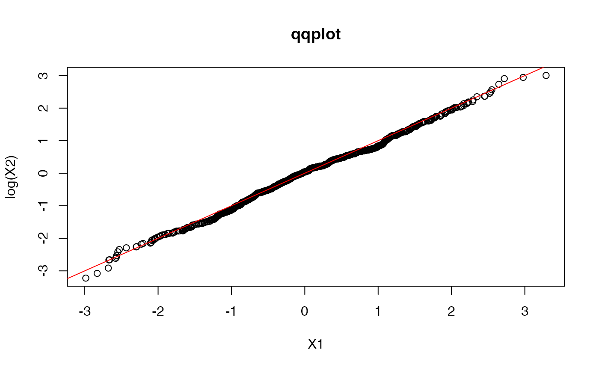
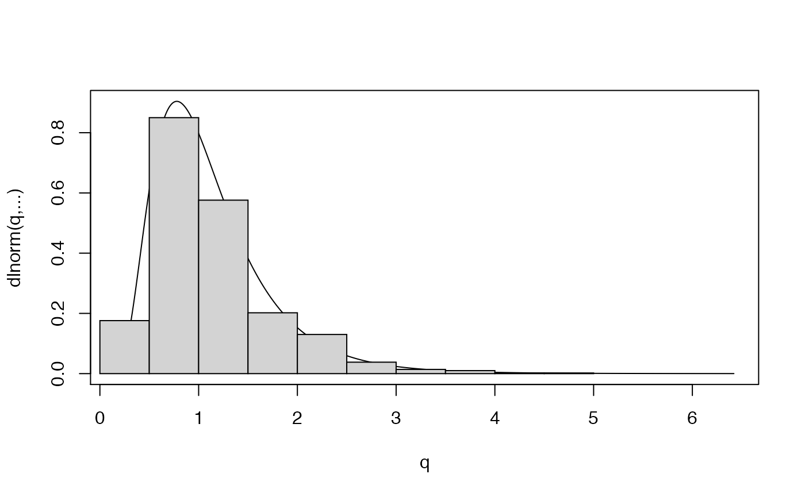
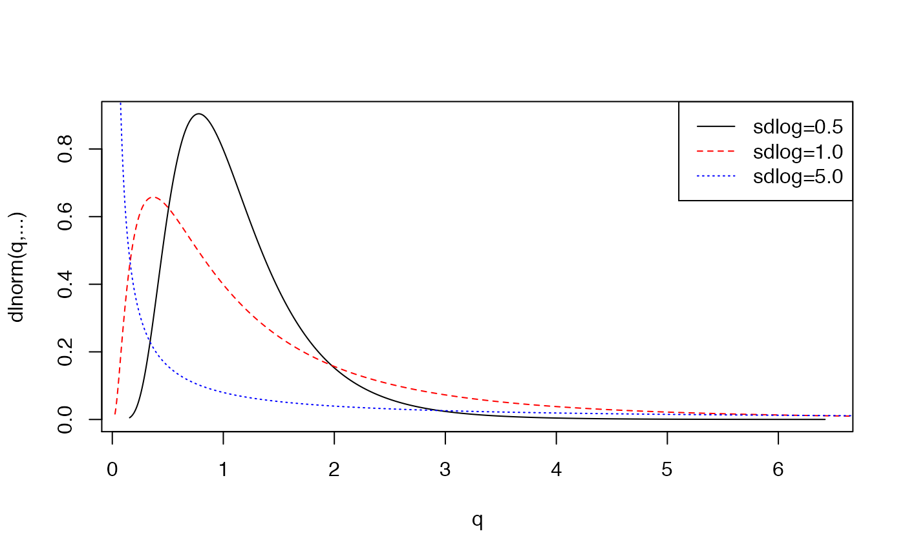

Let us generate data and plot from few examples of probability distributions. In general, any given distribution dist in R is defined by four functions rdist, pdist, ddist, and qdist, which correspond to the sampling, the CDF, the density (or mass) and the quantile functions, respectively. For example, the Normal distribution is defined by the four functions rnorm, pnorm, dnorm, and qnorm.
Let us generate a sample (X) of 100 points from a standard normal (mean 0 and stdev 1); visualize it as a boxplot and a histogram; generate a second sample (Y) of points that are linearly related to the first sample (based on the linear equation \(y = 2x + \epsilon\), with \(\epsilon \sim N(0,1)\).

par(mfrow=c(1,1))
Y <- 2 + X + rnorm(N)
plot(X,Y,pch=20)
abline(2,1,col="red") # plot a line with intercept 2 and slope 1
abline(h=0,lty=3) # show the origin
abline(v=0,lty=3) # ..
Let us now plot the well-known bell-shaped curve and the corresponding CDF.
A simple distribution plot function
Notice that in the above code, the points plotted are evenly spaced, which is not optimal, since we would like to have higher resolution where most of the density lies. Furthermore, we need to a-priori know where most of a distribution mass lies, so as to generate an adequate set of X coordinates. Otherwise, we might end up with a truncated plot, as shown in the examples below.
To take care of this, we can define a slightly more sophisticated distribution plotting function, using information about a distribution’s quantiles.
plot.distn <- function(qfun, dfun, n, type="l", lty=1, add=FALSE, xlab=NULL, ylab=NULL, main=NULL, col="black", silent=TRUE, ...)
{
p <- (1:(n-1))/n
q <- qfun(p,...) # generate the set of X-coordinates based on the distribution quantiles
if ( add )
lines( q, dfun(q,...), lty=lty, col=col )
else
plot( q, dfun(q,...), type=type, lty=lty, col=col, xlab=xlab,ylab=ylab,main=main )
## this is useful to determine plot boundaries
if (!silent) return ( c(0,max(dfun(q,...))) )
}Normal (or Gaussian) distribution
Now we can plot a histogram of 1000 data points drawn from a standard (i.e., mean=0, stdev=1) Normal (or Gaussian) distribution.

If we want the histogram to show frequencies (i.e., numbers in the 0-1 range), rather than counts, so that we can superimpose the density contour (using the function plot.distn), we can use the argument probability=TRUE
hist(X1,probability=TRUE)
plot.distn(qnorm,dnorm,n=1000,add=TRUE)
# let's increase sample size to increase histogram resolution
X1 <- rnorm(1000000,mean=0,sd=1)
hist(X1,probability=TRUE)
plot.distn(qnorm,dnorm,n=1000,add=TRUE)
Log-Normal distribution
Let’s plot from a log-normal distribution.
N <- 1000 # number of datapoints
X2 <- rlnorm(N,meanlog=0,sdlog=1)
hist(X2,probability=TRUE)
plot.distn(qlnorm,dlnorm,n=N,add=TRUE,meanlog=0,sdlog=1)
# the plot is truncated. Here's a fix (won't always work)
plot.distn(qlnorm,dlnorm,n=N,meanlog=0,sdlog=1)
hist(X2,probability=TRUE,add=TRUE)
# a log-normal distribution yields data whose logarithm is normally distributed
X1 <- rnorm(N,mean=0,sd=1) # remember X1 ~ N(0,1)
qqplot(X1,log(X2),main='qqplot') # plot it against X2 ~ log-N(0,1)
abline(0,1,col="red")

## let's see how different means and standard deviations look like ...
X2 <- rlnorm(N,meanlog=0,sdlog=0.5)
plot.distn(qlnorm,dlnorm,n=10*N,meanlog=0,sdlog=0.5,ylab="dlnorm(q,...)")
hist(X2,probability=TRUE,add=TRUE)
plot.distn(qlnorm,dlnorm,n=10*N,meanlog=0,sdlog=0.5,ylab="dlnorm(q,...)")
plot.distn(qlnorm,dlnorm,n=10*N,meanlog=0,sdlog=1.0,ylab="dlnorm(q,...)",add=TRUE, col='red',lty=2)
plot.distn(qlnorm,dlnorm,n=10*N,meanlog=0,sdlog=5.0,ylab="dlnorm(q,...)",add=TRUE, col='blue',lty=3)
legend('topright',col=c('black','red','blue'),lty=1:3,legend=c("sdlog=0.5","sdlog=1.0","sdlog=5.0"))